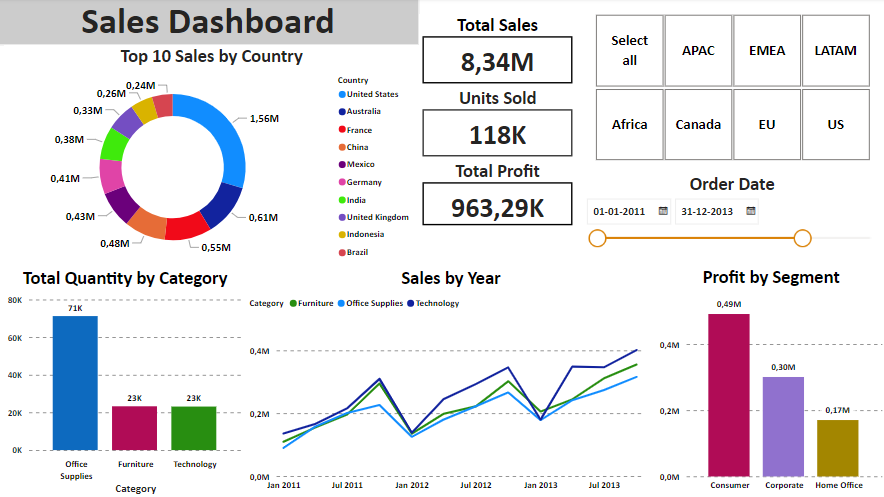
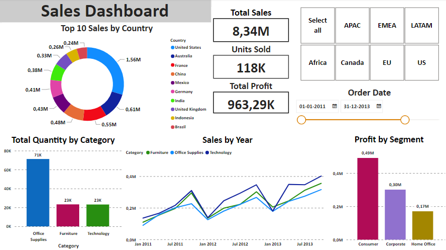

Project used to create a dashboard to show various graphical repreentations of metrics related with the global sales of a company, using slicers to filter the data.

Project used to explore data in a Covis 19 dataset using Joins, CTE's, Temp Tables, Windows Functions, Aggregate Functions, Creating Views and Converting Data Types.
Project to find if it is possible to classify companies as late in reporting tasks based on financial and economical aspects and also identify the attributes that contributes to that situation.

Study the influence of earnings, education and police work on crime rates in Portuguese municipalities.

Analysis of a supermarket dataset containing products and transactions of one month.

Equity portfolio optimization using the multi-armed bandit problem with the goal of maximizing the possible cumulative payout.
Simulation using the Monte Carlo method to model the probabilty of different outcomes in a process with random variables.